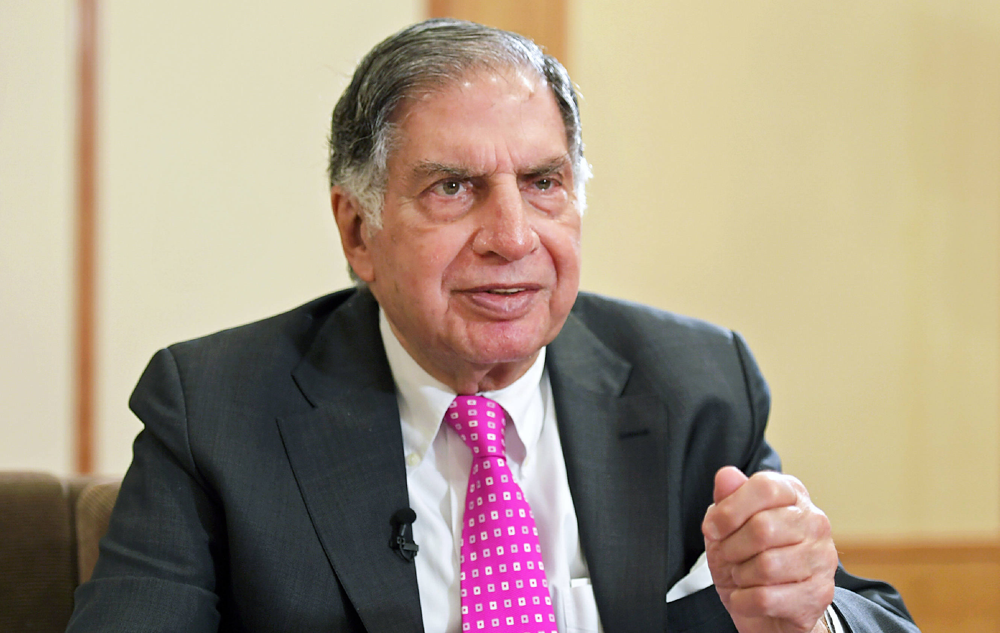

Ratan Tata An Indian businessman, investor, philanthropist and former chairman of Tata Sons
I don't believe in taking right decisions. I take decisions and then make them right.
ENTIRE JOURNEY
He was born on December 28, 1937 in Surat, India, to Naval Tata and Son. Naval Tata was the adopted son of the Jamsetji Tata’s younger son Ratanji Tata. Jamsetji Tata was the founder of the Tata Group of Companies. Ratan Tata has a brother, Jimmy, and a step-brother, Noel Tata.
1962
_____________
He received his early education from the Campion School, Mumbai and finished his schooling from the Cathedral and John Connon School, Mumbai. In 1962, he obtained his B.S. in architecture with structural engineering from Cornell University, U.S.A.
He started his career with the Tata Steel division where he shoveled stones and worked with the furnaces along with the blue-collar employees. It was a difficult job and helped him gain a better understanding and respect for his family business.
He was appointed as the Director-in-Charge of the National Radio & Electronics Company Limited (NELCO) in order to help its struggling finances. He worked towards building a better consumer electronics division but the economic recession and union strikes prevented him from achieving success.
In 1991, J.R.D. Tata appointed him as the new Chairman of the Tata Group of Companies. This decision came under scrutiny following objections from other executives of the company and questions were raised regarding his ability to run the corporation.
On his 75th birthday, i.e, on 28 December 2012 he resigned from the post of Chairman of Tata Group. Even after retirement, he is still an active businessman and invests in upcoming promising business ventures.